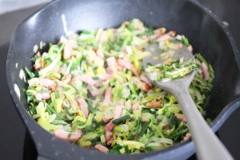
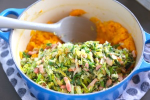
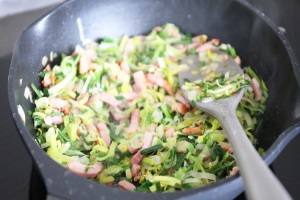
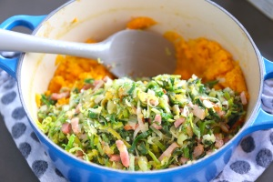

Zoete aardappelstamppot met prei
We delen vandaag een heerlijk recept voor een zoete aardappel stamppot met prei en spekjes.
Het is super simpel om te maken en staat in 30 minuten op tafel. Door de zoete smaak van de zoete
aardappels valt dit gerecht vaak ook bij de kids in de smaak.
Recept voor 2 personen
Tijd: 30 min.
Bereidingswijze
Schil de aardappels en snijd in een paar grote stukken. Kook de zoete aardappels ongeveer 15-20 minuten totdat ze zacht zijn.(foto 1)
Snipper de ui en maak de preien schoon. Snijd ook de preien in stukjes. Bak de spekreepjes in een pan zonder olie ongeveer 5 minuten. Daarna voeg je de ui en prei toe en bak je dit nog 6-8 minuten mee totdat de prei en ui zacht zijn. (foto 2)
Als de zoete aardappels zacht zijn, giet je het geheel af en voeg je daarna de roomboter, mosterd en een snuf zout en peper toe. Stamp de zoete aardappels tot puree.
Voeg daarna het preimengsel toe en meng dit door de zoete aardappelpuree met een lepel. (foto 3)
Eetsmakelijk!
- 2 preien
- 450 gr zoete aardappels
- 100 gr spekreepjes of vegareepjes
- 50 gr roomboter/margarine
- 1 ui
- 1 tl mosterd
- snufje zout en peper
Benodigdheden
 


